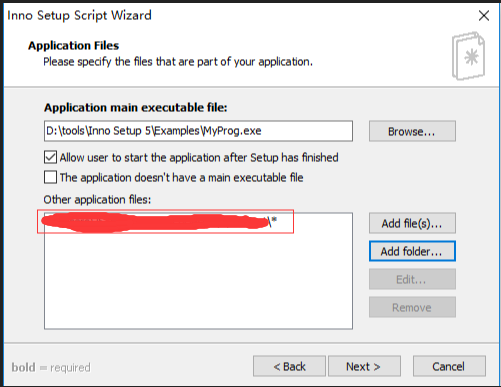

# electron安装+运行+打包成桌面应用+打包成安装文件+开机自启动
1.初始化node项目，生成package.json文件
?
| 1 | npm init |
|---|
2.安装electron，并保存为开发依赖项
?
| 1 | npm install electron -D |
|---|
3.根目录下新建index.js文件

const {app, BrowserWindow} = require('electron')
let mainWindow
function createWindow () {
mainWindow = new BrowserWindow({width: 800, height: 600})
mainWindow.loadFile('index.html')
// mainWindow.webContents.openDevTools()
mainWindow.on('closed', function () {
mainWindow = null
})
}
app.on('ready', createWindow)
app.on('window-all-closed', function () {
if (process.platform !== 'darwin') {
app.quit()
}
})
app.on('activate', function () {
// On OS X it's common to re-create a window in the app when the
// dock icon is clicked and there are no other windows open.
if (mainWindow === null) {
createWindow()
}
})
4.根目录下新建index.html文件
<!DOCTYPE html>
<html lang="en">
<head>
<meta charset="UTF-8">
<meta name="viewport" content="width=device-width, initial-scale=1.0">
<meta http-equiv="X-UA-Compatible" content="ie=edge">
<title>Document</title>
</head>
<body>
<h1>Hello Electron!!</h1>
</body>
</html>
5.打开package.json文件，新建命令
"scripts": { "start": "electron ." }
6.执行启动命令
npm start

目前为止，一个最糙的demo就完成了，但这样是远远不够的，作为一个桌面应用程序，我们希望点击exe文件就能直接启动应用，而不是打开命令行，输入启动命令。这一步就需要打包工具来完成了。
7.安装electron打包工具electron-packager
npm install electron-packager -g
8.配置打包命令
"scripts": { "start": "electron .", "pack": "electron-packager . myClient --win --out ../myClient --arch=x64 --app-version=0.0.1 --electron-version=2.0.0" }
命令结构如下（根据实际情况修改）：
“.”：需要打包的应用目录（即当前目录），
“myClient”：应用名称，
“--win”：打包平台（以Windows为例），
“--out ../myClient”：输出目录，
“--arch=64”：64位，
“--app-version=0.0.1”：应用版本，
“--electron-version=2.0.0”：electron版本
执行打包命令：
npm run pack
打包完成后，找到输出目录，打开打包完成后的文件夹，

可以看到生成了.exe的执行文件以及其他的一堆配置文件，双击myClient.exe就可以打开应用程序了。
现在，我们已经得到了应用程序的绿色版本（无需安装，拷贝整个文件目录之后即可使用），但是作为客户端应用程序，我们更希望能直接得到一个安装包，安装之后通过桌面快捷方式的形式去访问，这时候就需要Inno Setup出场了。
9.下载安装Inno Setup
下载地址：https://pc.qq.com/detail/13/detail_1313.html
安装完成以后打开Inno Setup客户端
a. file->new，新建脚本

b.填写应用程序信息，黑体为必填项
Application name： 应用名称；
Application version：应用版本；
Application publisher：发行单位（可选）；
Application websiter：应用程序网址（可选）；

c.完善应用文件信息
Application destination base folder：应用程序目标基本文件夹，可默认也可自定义；
Application folder name：应用文件夹名称；
Allow user to change the application folder：勾选，允许用户自定义安装位置；

d.指定属于应用程序的文件
Application main executable file：应用程序主执行文件，即第8步中打包生成的.exe文件；
Allow user to start the application after Setup has finished：允许用户在安装完成后启动应用程序；
Add folders：添加应用程序文件，选择第8步中打包出的文件根目录即可，要把所有.dll文件及其他配置文件都包含进去；
点击添加之后可以看到：

文件目录以自己的实际情况为准。
e.指定应用程序的快捷方式，勾选默认的两项即可，即“创建主执行程序的快捷方式到公共开始菜单程序文件夹”、“允许用户创建桌面快捷方式”

f.指定安装期间要显示的文档文件
License file：许可文件；
Information file shown before installation：安装之前显示信息文件；
Information file shown after installation：安装之后显示信息文件；

g.指定应包括的安装语言（汉化版的有简体中文选项），选择之后点击下一步
h.指定基本编译设置
Custom compiler output folder：自定义编译器输出文件夹，即最终编译出的安装包要放哪个位置；
Compiler output base file name：编辑器输出基本文件名，即安装包名称；
Custom Setup icon file：自定义安装程序图标文件；
Setup password：安装密码；

i.点击下一步

剩下的就是一路确定了，会询问你在编译之前要不要保存你的脚本（上面的配置步骤，最终会生成一个编译脚本文件），点击保存，先不要编译，打开脚本文件，新增配置项，修改注册表，设置开机自启动：
[Registry]
Root: HKLM; Subkey: "SOFTWAREMicrosoftWindowsCurrentVersionRun"; ValueType: string; ValueName: "testrun"; ValueData: "{app}{#MyAppExeName}"
然后，执行编译文件：build->compile


至此，所有步骤已经完成了，赶快去看看你的安装包能不能正常使用吧。
文章来源：https://www.cnblogs.com/kakayang/p/9559777.html